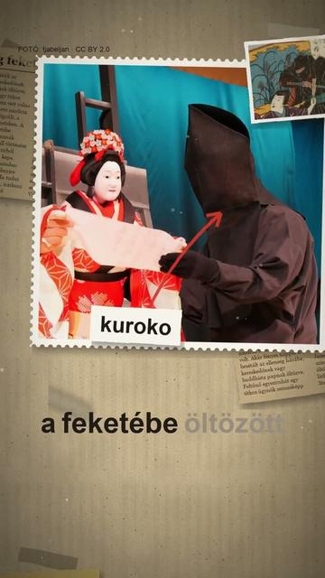

Megnézem a YouTube-onTényleg feketébe öltözött bérgyilkos volt a nindzsa?
Röviden: A hadakozó fejedelemségek korában a nindzsa legfontosabb dolga a hírszerzés volt; a források szabotázst és gyújtogatást is említenek (Nippon.com, interjú Jamada Júdzsi professzorral, Mie Egyetem).
A hadakozó fejedelemségek korában a nindzsa legfontosabb dolga a hírszerzés volt; a források szabotázst és gyújtogatást is említenek (Nippon.com, interjú Jamada Júdzsi professzorral, Mie Egyetem). Akár fényes nappal is besétált az ellenség házába, kereskedőnek vagy buddhista papnak öltözve. A tetőtől talpig fekete nindzsa képe az Edo-korban rögzült, a kabukiban, a regényekben és a fametszeteken. A japán színpadon a feketébe öltözött segéd, a kuroko láthatatlannak számít (Japán Nemzeti Színház); Stephen Turnbull történész szerint ebből a művészi hagyományból eredhet a fekete nindzsa képe. A valóságban a nindzsák többnyire egyszerű földművesruhát viseltek (Japán Turisztikai Hivatal). A képek illusztrációk: Kunyiszada és Hokuszai metszete, a Sóninki és a Bansensúkai nindzsakézikönyv lapja, Iga-Ueno vára, a Nindzsamúzeum egyik ruhája és egy kuroko bábelőadáson.
Az összes rész forrásokkal: https://valoban.pages.dev/
Források
- Nippon.com: Espionage and Sabotage: The Truth About the Ninja (2023)
- Mie Egyetem: Yamada Yuji-interjú (2016)
- Mie Egyetem: Iga-előadás (2015)
- Japan Arts Council: Kabuki, kurogo (archív)
- Japán Turisztikai Hivatal: Iga Ninja – Clothing
- Wikipedia: Kuroko (Turnbull-idézet)
6 forrás · Hogyan ellenőrzünk?
Hibát találtál? Írd meg nekünk, megnézzük.
Képek és kreditek
• kötélen mászó alak, Hokuszai Manga, 6. kötet – Katsushika Hokusai derivative work: AMorozov, Public domain (https://creativecommons.org/publicdomain/mark/1.0/) https://commons.wikimedia.org/?curid=7680391
• Kunyiszada metszete: nindzsa és Gendzsi (1853) – Utagawa Kunisada, Public domain (https://creativecommons.org/publicdomain/mark/1.0/) https://commons.wikimedia.org/?curid=83813637
• a Sóninki álruhalistája (1681) – Fujibayashi Masatake, Public domain (https://creativecommons.org/publicdomain/mark/1.0/) https://commons.wikimedia.org/?curid=7680710
• Iga-Ueno vára, 2013 – z tanuki, CC BY 3.0 (https://creativecommons.org/licenses/by/3.0/) https://commons.wikimedia.org/?curid=57162306
• nindzsaruha az Iga-rjú Nindzsamúzeumban, 2006 – Jeremy Hall, CC BY 2.0 (https://creativecommons.org/licenses/by/2.0/) https://commons.wikimedia.org/?curid=97166971
• kuroko bunrakubemutatón, Kiotó, 2014 – tjabeljan, CC BY 2.0 (https://creativecommons.org/licenses/by/2.0/) https://commons.wikimedia.org/?curid=115296679
• a Bansensúkai 8. kötetének ábrája – Fujibayashi Yasutake, Fujibayashi Sabuji (?), Public domain (https://creativecommons.org/publicdomain/mark/1.0/) https://commons.wikimedia.org/?curid=7680916
A képek módosítva: 9:16-ra kivágva, átméretezve, kameramozgással, ráégetett felirattal.